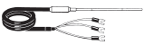

Building Automation
Industrial Automation
Power Automation & Safety


Bangladesh Distributor
Temperature Controllers
|
|
Features |
| Principles |
|
| Engineering Data |
|
| Explanation of Terms | Troubleshooting |
Related Contents
- Temperature Controllers
-
 Control Terminology
Control Terminology
-
Alarm Terminology
-
Temperature Sensor Terminology
-
Output Terminology
-
Setting Terminology
-
Temperature Sensor Types and Features
-
Pt100 and JPt100
-
Temperature Sensor Construction
-
Thermocouple Junction Construction
-
Terminal Block Appearance
-
Temperature Sensor Thermal Response
-
Vibration and Shock Resistance
-
Permissible Temperature in Dry Air
Control Terminology
ON/OFF control turns the control output ON and OFF at the set point, so if there are small amounts of noise near the set point, the output will turn ON and OFF frequently (which is called chattering). This will shorten the life of the output relay or unfavorably affects some devices connected to the Temperature Controller. To prevent this from happening, a temperature band (hysteresis) is created between the ON and OFF operations. This gap is called hysteresis.
Proportional control action causes an error in the process value due to the heat capacity of the controlled object and the capacity of the heater. The result is a small discrepancy between the process value and the set point in stable operation. This error is called offset. offset is the difference in temperature between the set point and the actual process temperature. It may exist above or below the set point.
Hunting and Overshooting
ON/OFF control action often involves the waveform shown in the following diagram. A temperature rise that exceeds the set point after temperature control starts is called overshooting. Temperature oscillation near the set point is called hunting. Improved temperature control is to be expected if the degree of overshooting and hunting are low.
Hunting and Overshooting in ON/OFF Control Action

Time-proportioning Control Action
Relays and SSRs can output only ON (100%) and OFF (0%). PID control, however, outputs the manipulated variable between 0% and 100%. Time-proportioning control action is an output method that adds a time parameter (control period) to the manipulated variable, which allows for a 0% to 100% output when using an ON/OFF output. A manipulated variable between 0% and 100% can be output by turning the output ON for the control period (seconds) multiplied by the manipulated variable (%), and then turning the output OFF for the remainder of the control period. Because the output turns ON and OFF only once during the control period, a long control period delays the control response, and a short control period speeds up the control response. If the control period is short, the life expectancy of output devices with contacts such as relays will decrease. As a general rule, set the control period for relay outputs to 20 seconds, and set the control period for SSR outputs to 2 seconds.
The proportional band is a parameter that sets the range in which control performs the proportional action. When the process value enters the proportional band, the proportional action outputs a manipulated variable between 0% and 100% that is proportional to the deviation between the set point and the process value. When the process value is outside the proportional band in heating control, the manipulated variable is output at 100% when the process value is lower and 0% when higher than the band.
Example:
If the control cycle is 10 s with an 80% control output, the ON and OFF periods will be as follows.
TON: 8 s
TOFF: 2 s
The derivative action are not used alone for control. It is used for control together with the proportional action. The control method that combines the proportional action and the derivative action is called the PD actions. When a ramp-type deviation (i.e., a deviation with a constant slope) is provided in the PD actions as shown in the figure, the time until the derivative manipulated variable reaches the same manipulated variable as the proportional action is called the derivative time. Therefore, this shows that the longer the derivative time is, the stronger the correction by the derivative action will be.
PD Action and Derivative Time
When a step-type deviation is added in the PI actions that combine the proportional and derivative actions or the PID actions that combine the proportional, integral, and derivative actions, the time until the integral manipulated variable reaches the same manipulated variable as the proportional action is called the integral time. Therefore, the shorter the integral time is, the stronger the integral action will be. But if the integral time is too short, the correction will be too strong and hunting may occur.
PI Action and Integral Time
For constant value control, control is preformed at a specific set point.
Program control is used to control temperature for a set point that will change at predetermined time interval according to a program.
Autotuning
The PID constants that can be used for good temperature control depend on the characteristics of the controlled object. The method to derive suitable PID constants for the differing characteristics of controlled objects is called autotuning. Typical methods are the step response method and limit cycle method.
A manipulated variable of 100% is output in steps, the maximum temperature ramp R and dead time L are measured from the response of the controlled object, and the PID constants are calculated from the values of R and L.
Outputs a manipulated variable at 100% and 0% alternately, and the PID constants are calculated from the hunting cycle and amplitude values that occur in the controlled object. Autotuning typically refers to the limit cycle method.
Readjusting PID Constants
Control can usually be performed without problems using the PID constants that are calculated with autotuning. Depending on the application, the priorities of overshooting suppression, response speed improvement, and stability improvement may be different. In those cases, the individual values of the PID constants can be adjusted by referring to the following examples to make the response behave closer to the anticipated response.
Response to Change in the Proportional Band
| Wider | It is possible to suppress overshooting although a comparatively long startup time and set time will be required. | |
| Narrower | The process value reaches the set point within a comparatively short time and keeps the temperature stable although overshooting and hunting will result until the temperature becomes stable. |
Response to Change in Integral Time
| Wider | The set point takes longer to reach. It is possible to reduce hunting, overshooting, and undershooting although a comparatively long startup time and set time will be required. | |
| Narrower | The process temperature reaches the set point within a comparatively short time although overshooting, undershooting, and hunting will result. |
Response to Change in Derivative Time
| Wider | The process value reaches the set point within a comparatively short time with comparatively small amounts of overshooting and undershooting. Finecycle hunting will result due to the change in process value. | |
| Narrower |  | The process value will take a relatively long time to reach the set point with heavy overshooting and undershooting. |
Self-tuning
The PID constants are calculated with the step response tuning when the Temperature Controller operation begins and when the set point is changed. Once the PID constants have been calculated, self-tuning is not executed when the next control operation is started as long as the set point remains unchanged.
Models and Tuning Methods
| Model | Tuning Methods |
| E5[]C | AT, ST |
| E5[]N * | AT, ST |
| E5[]R | AT |
| E5CS-U/E5CSV | AT, ST |
| E5CB | AT |
| EJ1 | AT |
| E5ZN | AT |
| C200H-TC | AT |
| C200H-TV | AT |
| C200H-PID | AT |
ST: Self-tuning
AT: Autotuning
Note: Not including the E5ZN
Control Outputs
Alarm Terminology
Alarm Output
Some Temperature Controllers output an alarm signal to the alarm output, while others allow you to assign an auxiliary output or control output as the output destination.
The process value, alarm value, and set point are compared, and a signal is output according to the operating mode specified by the alarm type. The main operating modes are a deviation alarm, absolute-value alarm, standby sequence alarm, heater burnout alarm, SSR failure alarm, and loop burnout alarm. These alarms may also be combined.
The deviation alarm turns ON according to the deviation from the set point in the Temperature Controller.
The absolute-value alarm turns ON according to the alarm temperature regardless of the set point in the Temperature Controller.
Standby Sequence Alarm
It may be difficult to keep the process value outside the specified alarm range in some cases (e.g., when starting up the Temperature Controller), and the alarm turns ON abruptly as a result. This can be prevented with the standby sequential function of the Temperature Controller. This function makes it possible to ignore the process value right after the Temperature Controller is turned ON or right after the Temperature Controller starts temperature control. In this case, the alarm will turn ON if the process value enters the alarm range after the process value has been once stabilized.
Example of Alarm Output with Standby Sequence Set
Temperature rise

Temperature drop
SSR Failure Alarm
SSRs often fail structurally in a short-circuit mode, and if there is a short-circuit failure, there is a risk of a hazardous situation where the temperature of the heater may continue to increase. The SSR failure alarm detects an SSR short-circuit failure and outputs an alarm. The heater current is detected using a current transformer (CT), and the SSR failure alarm is output if the current continues flowing to the heater even though the output from the Temperature Controller that drives the SSR is OFF.
If equipment continues to operate when people are not aware that the heater has burned out, products may become faulty, and in the worst case, the equipment may be damaged. The heater burnout alarm detects burnouts in heaters and disconnected heater cables. The heater current is detected using a current transformer (CT), and the heater burnout alarm is output if the current does not flow to the heater even though the output of the Temperature Controller that drives the heater is ON. A heater burnout in a three-phase heater can also be detected if the type of Temperature Controller that can be connected to two current transformers (CTs) is used.
* When the Temperature Controller output is a current output, the heater burnout alarm cannot be used.
An alarm latch can be used to keep the alarm ON until the latch is canceled regardless of the temperature after the alarm output has turned ON.

LBA (Loop Burnout Alarm)
An alarm is output by assuming the occurrence of control loop failure when deviation is a certain value or higher and the input does not change in the direction that reduces the deviation, even though control is being performed. This alarm can be used when operation is started but the sensor has not been installed after replacing the heater and as a method for detecting missing sensors.
Temperature Sensor Terminology
Cold Junction Compensation
A thermocouple produces a voltage (i.e., a thermoelectromotive force) from the temperature difference between the hot junction and the cold junction on the opposite side. For this reason, a thermocouple outputs a relative temperature, not an absolute temperature. In order for the Temperature Controller to calculate the absolute temperature from the relative temperature that is output by the thermocouple, the effect of the cold junction temperature is compensated for, or canceled out, by detecting the temperature of the cold junction and adding a thermoelectromotive force that corresponds to that temperature to the thermoelectromotive force of the thermocouple. The method of calculating the absolute temperature of the hot junction by adding a voltage is called cold junction compensation.
In the above diagram, the thermo-electromotive force (1) VT that is measured at the input terminal of the Temperature Controller is equal to V (350, 20).
Here, V (A, B) gives the thermo-electromotive force when the cold junction is A °C and the cold junction is B °C.
Based on the law of intermediate temperatures, a basic behavior of thermocouples, (2) V (A, B) = V (A, C) - V(B, C).
Compensating Conductor
If the thermocouple temperature sensor cable does not reach the Temperature Controller and the cable between the sensor and the Temperature Controller is extended with copper wire, a large temperature error will occur.
A compensating conductor must be used to extend the thermocouple temperature sensor cable. A compensating conductor is a cable that produces nearly the same thermoelectromotive force as the thermocouple around room temperature, and a compensating conductor that is suitable for the thermocouple must be used. Compared to a thermocouple cable, a compensating conductor is generally inexpensive. Compensating conductors suitable for various thermocouples are available commercially.
Example of Compensating Conductor Use
If you extend the cable of a platinum resistance thermometer or thermistor temperature sensor, using a compensating conductor will actually cause a large temperature error.
Extend the cable using a cable with sufficiently low conductor resistance.
As the process value, the Temperature Controller displays the result of adding an input shift to or subtracting it from the temperature measured by the temperature sensor. You can use the input shift to compensate the Temperature Controller display when the temperature sensor measurement point and the point at which you intend to measure temperature are different and the temperature difference is already known.
Output Terminology
Reverse Operation (Heating)
Reverse operation is used to increase the manipulated variable when the temperature is lower than the set point. Heating control is Reverse operation.
Direct Operation (Cooling)
Direct operation is used to increase the manipulated variable when the temperature is higher than the set point.
Cooling control is Direct operation.
Temperature control over a controlled object would be difficult if heating was the only type of control available, so cooling control was also added. Two control outputs (one for heating and one for cooling) can be provided by one Temperature Controller.

MV (Manipulated Variable) Limiter
The MV upper limit and MV lower limit are used to set the upper and lower limits of the manipulated variable that will be output. When the manipulated variable calculated by the Temperature Controller is outside the range of the MV limiter, the actual output will be the upper limit or the lower limit.
With heating and cooling control, the cooling MV is treated as a negative value. Generally speaking then, the upper limit (positive value) is set to the heating output and the lower limit (negative value) is set to the cooling output as shown in the following diagram.

The rate of change limit for the MV sets the amount of change that occurs per second in the MV. If the MV calculated by the Temperature Controller changes significantly, the actual output follows the rate of change limiter setting for MV until it approaches the calculated value.
The overlap band and dead band are set for the cooling output. A negative value here produces an overlap band and a positive value produces a dead band.
The heating side output and cooling side output will not be simultaneously output.
The heating side output and cooling side output will be simultaneously output near the set point.
For Temperature Controllers capable of heating/cooling control that do not have separate PID constants for the heating and cooling, it may not be possible to obtain good control performance with the same PID constants when the heating and cooling characteristics of the controlled object differ greatly. In this case, adjust the proportional band on the cooling side (cooling side P) with the cooling coefficient until heating and cooling side control are balanced. The P for heating and cooling side can be calculated using the following formulas.
Heating side P = P
Cooling side P = Heating side P x cooling coefficient
For cooling side P control when heating side characteristics are different, multiply the heating side P by the cooling coefficient.
Heating Side P x 0.8
Heating Side P x 1.5
Heating/Cooling PID Control
For Temperature Controllers that can set PID control separately for heating and cooling, the PID constants for these will be automatically set by selecting an adjustment method with the heating/cooling tuning method according to the control characteristics of the cooling side, and then executing autotuning.
| Parameter | Setting |
| Heating/Cooling Tuning Method | Same as heating control |
| Linear | |
| Air cooling | |
| Water cooling |
Linear Tuning
Control that is suitable for an application that has linear cooling characteristics is performed.
Air Cooling/Water Cooling Tuning
Control that is suitable for an application that does not have linear cooling characteristics (such as plastic molding machines) is performed. The response is fast and the response characteristics are stable.
Positioning-Proportioning Control
This is also called ON/OFF servo control. When a Control Motor or Modutrol Motor with a valve is used in this control system, a potentiometer for open/close control reads the degree of opening (position) of the control valve, outputs an open and close signal, and transmits the control output to Temperature Controller. The Temperature Controller outputs two signals: an open and close signal.
Floating control (feedback of the valve position is not provided with a potentiometer; control is possible even without a potentiometer) can also be selected.
There may be situations where you want to send the process value and set point to a recorder, another Temperature Controller, or a PLC using a method other than communications. The transfer output converts one value out of process value, set point, or other value to a current between 4 and 20 mA and outputs it. The device that receives the transfer output must support a current input between 4 and 20 mA.
Setting Terminology
Set Limit
The range in which the set point can be set is determined by the type of temperature sensor, so a large value can be set. The set limit can restrict the temperature range that can be set in cases where the equipment will be damaged if a temperature is set that is higher than the temperature that will actually be used.
Multiple Set Points
Multiple set points can be preset and then switched using the front keys or event inputs.
Setting Memory Banks
Temperature Controllers that have multiple set points, PID constants, and alarm values save these parameters in groups called banks. The parameters registered in a bank can be changed at once by switching banks during control.
Set Point (SP) Ramp
Use this function to increase the temperature at a predetermined rate or to increase the temperature to the target temperature in a predetermined time. When the SP ramp is enabled, the set point will be set and the temperature will be controlled until it reaches the set point as shown in the following figure.
Event Input
The event input is used to input an ON/OFF signal to the Temperature Controller. A function can be assigned to the input, such as switching multi-SPs or RUN/STOP, and this allows the Temperature Controller to be externally controlled.
The input digital filter is used when the external noise in the sensor input signal is large and control or measurements are unstable. The process value that will be used for control is a value that has passed through the input digital filter. The input digital filter setting value is the time constant of the digital filter. The following figure shows the relationship between the time constant and the process value (PV) after passing through the filter.
Temperature Sensor Types and Features
Pt100 and JPt100
In January 1, 1989, the JIS standard for platinum resistance thermometers (Pt100) was revised to incorporate the IEC (International Electrotechnical Commission) standard. The new JIS standard was established on April 1, 1989. Platinum resistance thermometers prior to the JIS standard revision are distinguished as JPt100. Therefore, make sure that the correct resistance thermometer - Glossary of Industrial Automation">platinum resistance thermometer is being used.
The following table shows the differences in appearance of the Pt100 and JPt100.
| Classification by model | |
| Pt100 (New JIS standard) | E52-P15AY Pt100 is indicated as P. |
| JPt100 (Previous JIS standard) | E52-PT15A * JPt100 is indicated as PT. |
* OMRON discontinued production of JPt100 Sensors in March of 2003.
Temperature Sensor Construction
| Sheathed | Standard | |
| Features | Compared with standard models, these sensors have high resistance to vibration and shock. The finished outer diameter is extremely slim enabling easy insertion in small sensing objects, and low heat capacity enables fast response to changes in temperature. The sheathed tubing is flexible, enabling insertion and measurement within complex machinery. The airtight construction provides high sensitivity and prevents oxidation, for superior heat resistance and durability. | Compared with the sheathed models, the thick tubing diameter provides strength and durability. Slow response speed. |
| Internal structure |
Thermocouple Junction Construction
| Non-grounded models | Grounded models | |
| Features | Fully isolated thermocouple junction and protective tubing Response is inferior to grounded models, but noise resistance is high. Widely used for general-purpose applications. | Soldered ends of thermocouple junction protective tubing. Fast response but noise resistance is low. High productivity at a low cost. |
| Internal construction |
Terminal Block Appearance
| Exposed lead wires | Exposed terminals | Enclosed terminals | |
| Features | Lead wires directly extend from protective tubing, enabling low- cost manufacturing without requiring more space. → For building into machines | Construction uses exposed terminal screws for easy maintenance. → For general-purpose indoor use | Construction with enclosed terminal screws enables broad range of applications. → For indoor industrial equipment |
| Appearance |  | ||
| Permissible temperature in dry air | Sleeve Standard: 0 to +70°C Heat Resistive: 0 to +100°C Lead wire (platinum resistance thermometer) Standard (vinyl-covered): -20 to +70°C Heat resistive (glass-wool- covered with stainless-steel external shield): 0 to 180°C Lead wire (compensating conductor) Standard (vinyl-covered): -20 to +70°C Heat resistive (glass-wool- covered with stainless-steel external shield): 0 to 150°C | Permissible temperature in dry air for terminal box: 0 to +100°C | Permissible temperature in dry air for terminal box: 0 to +90°C |
Temperature Sensor Thermal Response
A temperature sensor has a thermal capacity. That means that time is required from when the temperature sensor touches the sensing object until the temperature sensor and sensing object reach the same temperature.
For a thermocouple, the response time is the time required for the temperature sensor to reach 63.2% of temperature of the sensing object. For a resistance thermometer, the response time is the time to reach 50% of temperature of the sensing object.
Thermal Response of Sheathed Temperature Sensors (Reference Value)
Protective tubing: ASTM316L
| Test conditions | Static water, room temperature to 100 °C | ||||
| Protective tubing dia. (mm) | 1.0 dia. | 1.6 dia. | 4.8 dia. | 8 dia. | |
| Indicated value | Thermocouple | Thermocouple | Thermocouple | Platinum resistance thermometer | Platinum resistance thermometer |
| Response time | 1 s max. | 1 s max. | 1.8 s | 3 s | 6.5 s |
Standard Temperature Sensors
Thermal Response of Platinum Resistance Thermometer (Reference Value)
Protective tubing: SUS316
| Test conditions | Static water, room temperature to 100°C |
| Protective tubing dia. (mm) | 10 dia. |
| Indicated value | |
| Response time | 12.8 s |
Vibration and Shock Resistance
The testing standards for temperature sensors specified by JIS are provided in the tables on the right. Refer to these standards and provide sufficient margins for the application conditions.
Vibration Resistance
Thermocouple
(Conforms to JIS C1602-2015)
| Test item | Frequency (Hz) | Double amplitude (mm) | Testing tim (min) | Vibration direction | |
| Sweeps | Destruction | ||||
| Resonance test | 30 to 100 | 0.05 | 2 | --- | Two axis directions including length direction |
| Fixed frequency durability test | 100 | 0.02 | --- | 60 | |
Note: This test is not performed for Sensors with non-metal protective tubing.
Fixed frequency durability tests are conducted at 70 Hz when the resonance point is 100 Hz.
Platinum Resistance Thermometer
(Conforms to JIS C1604-2013)
| Frequency (Hz) | Acceleration (m/s2) | Sweeps per minute | No. of sweeps |
| 10 to 150 | 10 to 20 | 2 | 10 |
Note: This test is not performed for Sensors with non-metal protective tubing.
Shock Resistance
Holding the test product on its side, the product is then dropped from a height of 250 mm onto a steel plate 6 mm thick placed on a hard floor. This process is repeated 10 times, after which the product is checked for electrical faults in the thermocouple junctions and terminal contacts. This test is not performed, however, on products with non-metal protective tubing (conforms to JIS C1602-2015 and JIS C1604-2013).
Permissible Temperature in Dry Air
The permissible temperature is the temperature limit for continuous usage in air.
For thermocouples with protective tubes, the permissible temperature is determined collectively by the type of thermocouple, the element diameters, the insulating tube material, protective tube materials, heat resistance, and other factors. The permissible temperature is also called the usage limit.
Generally speaking, lowering the usage temperature will increase the life of a thermocouple. Allow sufficient leeway in the permissible temperature.
Sheathed
Thermocouple Permissible
Temperature in Dry Air
M: Protective tubing material
D: Protective tubing diameter (mm)
| Element M | K (CA) ASTM316L | J (IC) ASTM316L |
| D | ||
| 1 dia. | 650°C | 450°C |
| 1.6 dia. | 650°C | 450°C |
| 3.2 dia. | 750°C | 650°C |
| 4.8 dia. | 800°C | 750°C |
| 6.4 dia. | 800°C | 750°C |
| 8.0 dia. | 900°C | 750°C |
Standard
Thermocouple Permissible
Temperature in Dry Air
M: Protective tubing material
D: Protective tubing diameter (mm)
| Element M | K (CA) SUS310S | K (CA) SUS316 | J (IC) SUS316 |
| D | |||
| 10 dia. | 750°C | 750°C | 450°C |
| 12 dia. | 850°C | 850°C | 500°C |
| 15 dia. | 900°C | 850°C | 550°C |
| 22 dia. | 1,000°C | 900°C | 600°C |
Permissible Temperature in Dry Air
| Element M | R PT0 | R PT1 |
| D | ||
| 15 dia. | 1,400°C | |
| JIS symbol | Type |
| PT0 | Protective tubing: Special ceramic |
| PT1 | Protective tubing: Ceramic Cat. 1 |